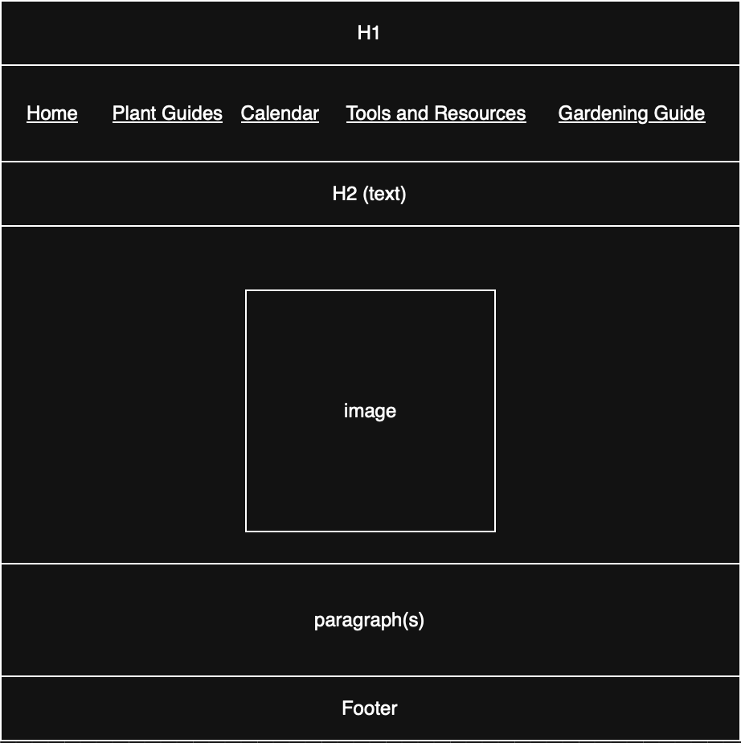
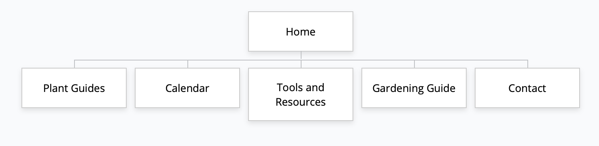

Project Overview
Project Name: Home Garden
Student Name: Sasha Chernoivan
Project Description
- This website will provide home gardening information and techniques for anyone interested in gardening.
- The intended users of this website will be home gardeners and individuals who want to grow their food at home.
- This website will contain information about plants, gardening advice, and a guide for being a successful gardener.
Client Information
- Client Name: Emily Rose
- Client Email: lanbonn@protonmail.com
- Client Phone Number: [private]
Wireframe

Site Map

Page Design
1. Home
- Purpose: To provide information about what the website offers and to welcome users.
- Intended Users: First time visitors, beginner gardeners, and returning users.
- Content: Welcome message and site description, featured tips, image, preview of other pages.
- Actions on Page: Navigate to other pages
2. Plant Guides
- Purpose: Helps users learn how to grow specific plants.
- Intended Users: Beginner users choosing plants, gardeners looking for tips.
- Content: Specific plant information (name, image, description), care instructions, growing difficulty level, harvest information.
- Hyperlinks/Dropdowns: Link to specific plants.
- Actions on Page: When user clicks on hyperlink on top of page (alphabetical order), the page jumps to that section.
3. Calendar
- Purpose: To inform users about the best times to plant various crops during different seasons.
- Intended Users: Gardeners planning ahead, users in specific climates.
- Content: This page will display a calendar for when to plant various crops.
- Dropdowns: Seasons
- Actions on Page: When user selects a season from the dropdown, the calendar updates to show the corresponding planting information.
4. Tools and Resources
- Purpose: To provide users with the needed tools and resources for their gardening journey.
- Intended Users: Users who want to start planting, individuals looking for new tools.
- Content: Recommendation for needed tools needed for certain gardening tasks.
- Hyperlinks/Dropdowns: Links to external resources for where to find gardening tools and supplies.
- Actions on Page: Users can click on the links to navigate to the external resources.
5. Gardening Guide
- Purpose: This page will provide users with a step-by-step guide for practical gardening skills.
- Intended Users: Beginner gardeners looking for guidance.
- Content: This page will contain step-by-step tutorials on how to start a garden.
- Hyperlinks/Dropdowns: Hyperlinks to different sections on the page that the user can easily navigate to.
- Actions on Page: Users can click on the hyperlinks to navigate to different sections of the page.
6. Contact
- Purpose: To provide users with a way to contact the client.
- Intended Users: Users who have questions, want to provide feedback, or want to connect with the client.
- Content: This page will contain a contact form for users to fill out and submit.
- Data Entry: Name, email, message
- Validation: All fields are required. Email must be in correct format.
- Actions on Page: When user fills out form and clicks submit, the form data is sent to the website owner via email.
Dynamic Functionality on the Website
Photo Gallery
- Description: A photo gallery showcasing various plants and gardening scenes.
- Purpose: To provide visual inspiration and examples for users.
- Example Site: Example Gardening Photos